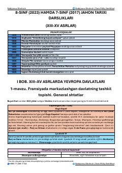

8J8-sinf jahon tarixi fanidan milliy sertifikat imtihonlari uchun oʻquv qoʻllanma.
Ushbu qoʻllanma 8-sinf jahon tarixi fanidan milliy sertifikat imtihonlariga tayyorgarlik koʻrish va oʻquv materiallarini oʻzlashtirish uchun moʻljallangan. Unda XIII–XV asrlardagi Yevropa davlatlari tarixi, muhim voqealar xronologiyasi hamda asosiy tarixiy jarayonlar haqida qisqacha maʼlumotlar berilgan.